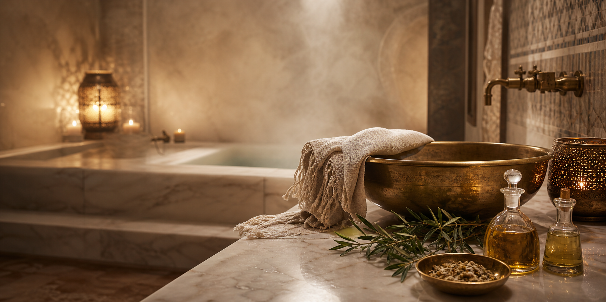

Steam
The body softens and the visit begins to slow down.

Signature Ritual
Steam, black soap, kessa exfoliation, and unhurried aftercare presented as the lounge’s signature ritual.
Book Moroccan BathWhat To Expect
The body softens and the visit begins to slow down.
Traditional cleansing prepares the skin for exfoliation.
Long, deliberate exfoliation reveals smoother, renewed skin.
The team can suggest a facial, hair treatment, or nail service to complete the visit.
Guest Guidance
Use WhatsApp to confirm preferred timing, whether it is your first Moroccan Bath, and whether you would like to pair the ritual with another service.
Exact duration, preparation notes, and pricing should be confirmed by the Aasta Ayur team before launch.